Mulai Pola Hidup Sehat spa dengan Nutrisi yang Tepat
NutriNesia hadir untuk membantu Anda memahami nutrisi, membangun kebiasaan sehat, dan menjalani hidup lebih seimbang setiap hari.
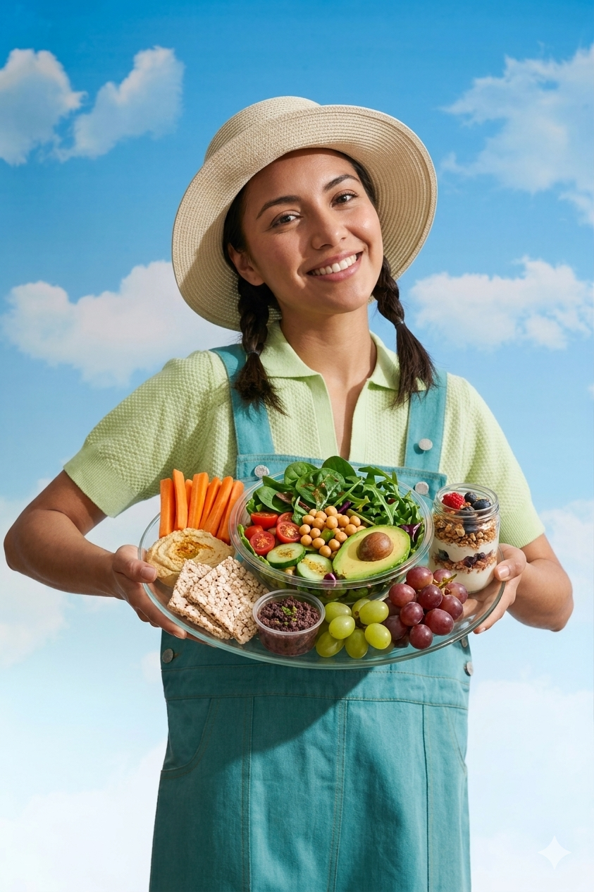
Komunitas Aktif
Bergabung dengan 15,000+ member dalam perjalanan sehat.
Analisis Gizi AI
Akurasi analisis hingga 98% untuk setiap jenis hidangan.
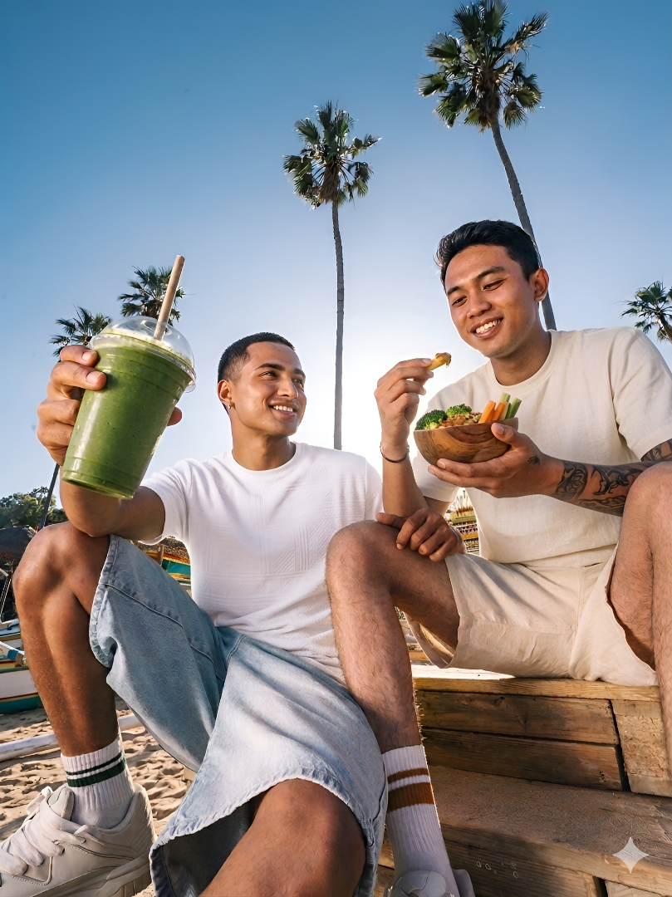
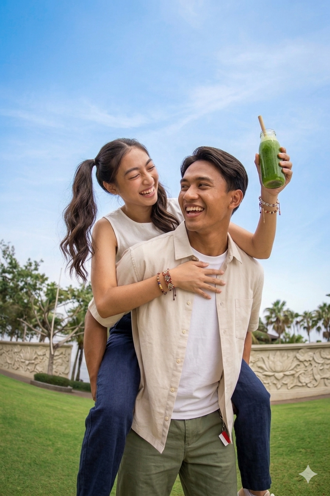
Mulai Perjalanan Sehat Anda
Dapatkan analisis nutrisi, challenge harian, dan panduan sehat gratis.

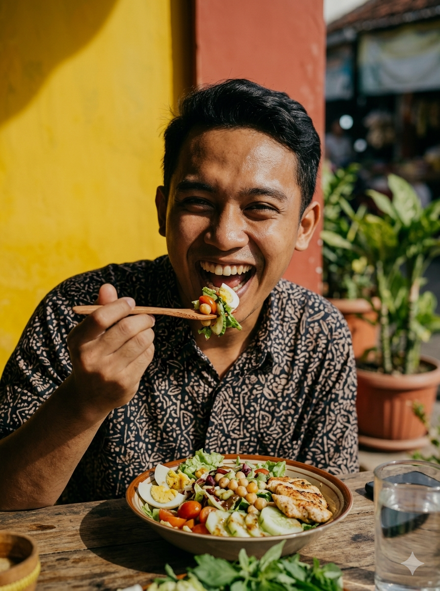
Mewujudkan Indonesia yang
Lebih Sehat & Bahagia
NutriNesia adalah platform nutrisi digital yang dirancang khusus untuk membantu masyarakat Indonesia membangun pola hidup sehat melalui edukasi, teknologi, dan pengalaman yang lebih terarah.
0
tahun pengalaman
0
pengguna aktif
0
resep sehat
0
rating rata-rata
Masalah Gizi yang Sering Diabaikan
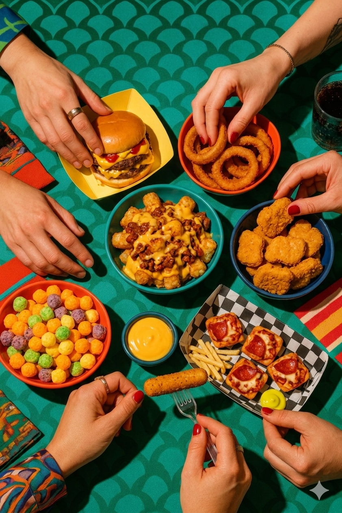
Pola Makan Tidak Teratur
Jadwal makan yang tidak konsisten menyebabkan metabolisme terganggu dan kekurangan nutrisi penting.
Konsumsi Gula Berlebih
Minuman manis dan makanan olahan menyumbang kalori berlebih yang berisiko meningkatkan diabetes.
Kekurangan Serat Harian
Kurangnya asupan sayur dan buah membuat pencernaan tidak optimal dan tubuh mudah lelah.
Porsi Makan Berlebihan
Makan dengan porsi yang tidak terkontrol menyebabkan penumpukan lemak berlebih pada tubuh.
Temukan Fitur yang Mendukung Hidup Sehatmu
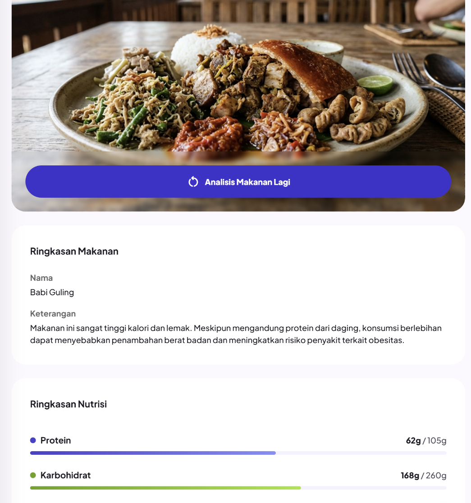
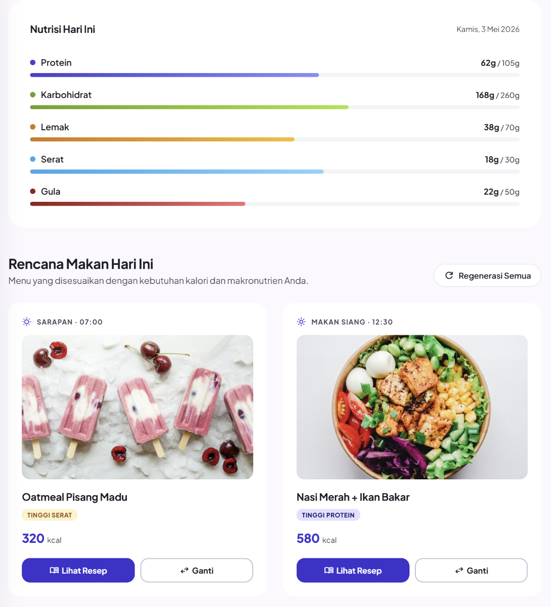
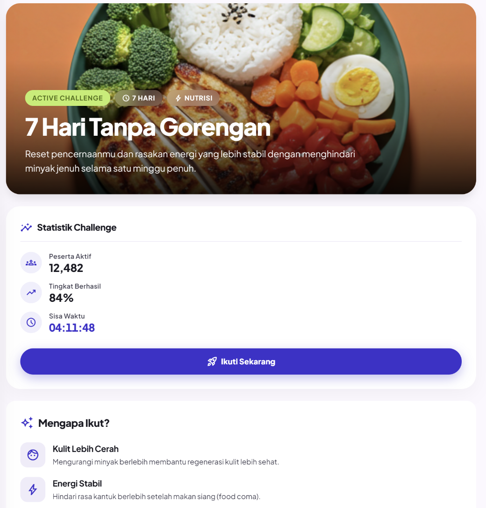
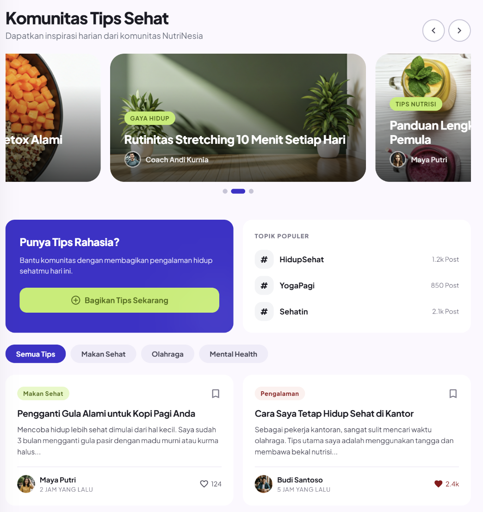
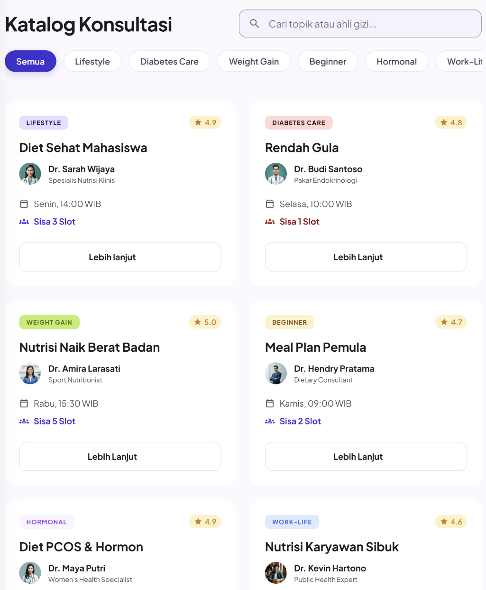
Analisis Gizi AI
Gunakan teknologi AI untuk memindai makanan Anda secara instan dan dapatkan rincian kalori serta nutrisi secara akurat.
Perencanaan Nutrisi
Rencanakan jadwal makan Anda untuk sehari-hari dengan bantuan rekomendasi ahli gizi dan AI untuk hasil yang optimal.
Challenge Sehat
Ikuti berbagai challenge sehat yang menarik bersama komunitas untuk menjaga motivasi dan mencapai tujuan kesehatan bersama.
Komunitas Sehat
Bergabunglah dengan komunitas sehat untuk saling mendukung dan berbagi pengalaman tujuan kesehatan Anda.
Konsultasi Gratis
Dapatkan konsultasi gratis dengan sistem antrian lewat ahli gizi bersertifikat untuk membantu mencapai tujuan kesehatan Anda.
Baca cerita sukses dari
para pengguna kami
Perjalanan nyata menuju hidup yang lebih berkualitas.
"Awalnya saya ragu, tapi fitur Analisis Gizi benar-benar membantu saya mengontrol porsi makan harian tanpa rasa stress."
"NutriNesia membantu saya hidup lebih sehat. Rekomendasi menunya sangat membantu saya mencapai tujuan saya."

"Rekomendasi makanan yang disesuaikan dengan kondisi kesehatan saya sangat membantu saya mencapai tujuan saya."
Pertanyaan yang
Sering Diajukan
Masih ada pertanyaan?
Baik itu tentang program, aplikasi, atau hal lainnya — kami siap membantu Anda.
Hubungi Kami north_eastApakah NutriNesia dapat digunakan secara gratis?
Ya. NutriNesia menyediakan berbagai fitur gratis seperti analisis gizi dasar, challenge sehat harian, resep sehat, dan komunitas pengguna. Beberapa layanan lanjutan seperti konsultasi dengan ahli gizi memiliki sistem reservasi dan antrean terbatas.
Bagaimana cara kerja Analisis Gizi AI di NutriNesia?
Pengguna dapat mengunggah foto makanan. Sistem AI NutriNesia akan membantu memperkirakan kalori, protein, karbohidrat, lemak.
Apakah hasil analisis nutrisi di NutriNesia akurat?
Hasil analisis NutriNesia dirancang sebagai panduan nutrisi harian berdasarkan database makanan dan teknologi AI. Meskipun tidak menggantikan diagnosis medis profesional, hasil yang diberikan dapat membantu pengguna memahami pola makan dengan lebih baik.
Apa manfaat mengikuti Challenge Sehat?
Challenge Sehat membantu pengguna membangun kebiasaan sehat secara konsisten melalui target harian seperti minum air, tidur cukup, makan sayur, dan aktivitas fisik ringan. Pengguna juga dapat memperoleh badge pencapaian dan melihat progres kesehatan mereka.
Apakah saya bisa berkonsultasi langsung dengan ahli gizi?
Bisa. NutriNesia menyediakan fitur konsultasi gratis dengan sistem reservasi dan antrean. Pengguna dapat memilih topik konsultasi, melihat jadwal yang tersedia, lalu melakukan reservasi sesuai kebutuhan.
150+ Mitra
Mempercayai Kami.
NutriNesia adalah partner kesehatan terpercaya bagi berbagai institusi medis, komunitas fitness, dan penyedia pangan sehat di seluruh Indonesia.
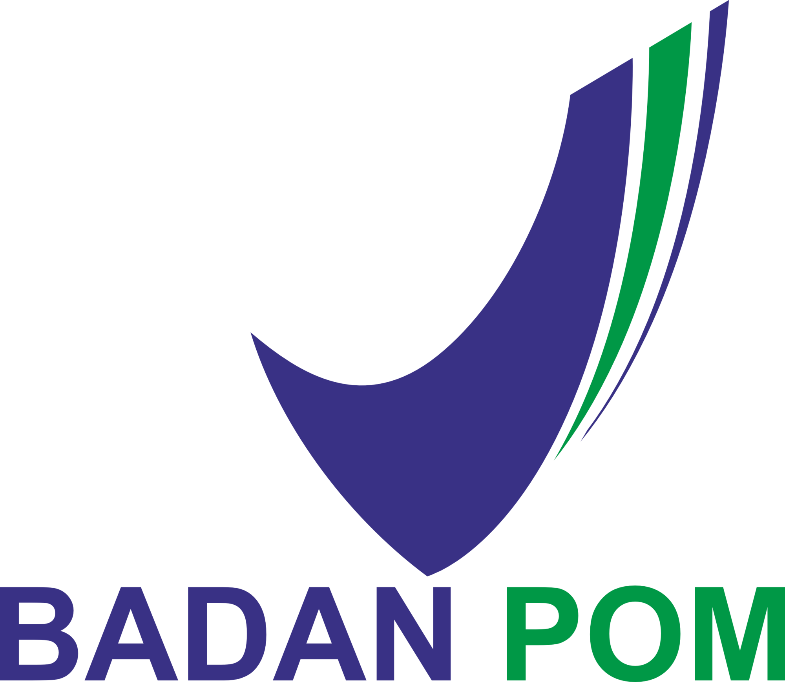
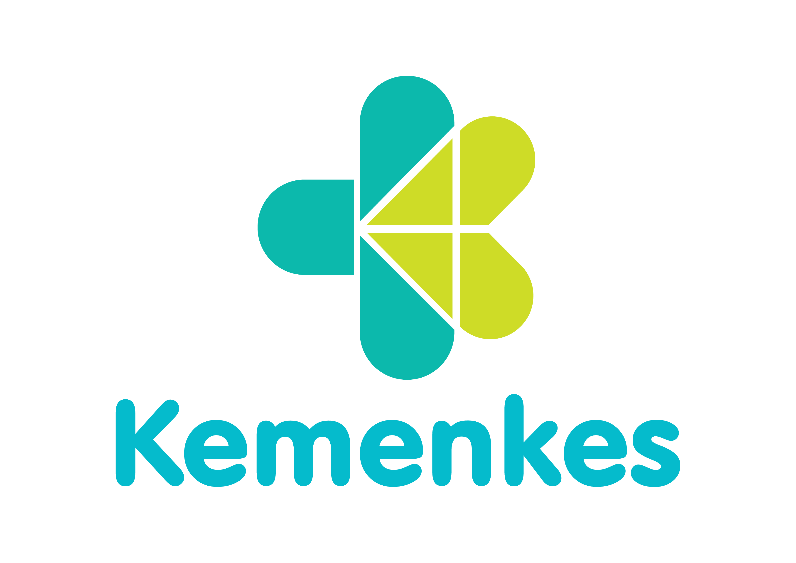
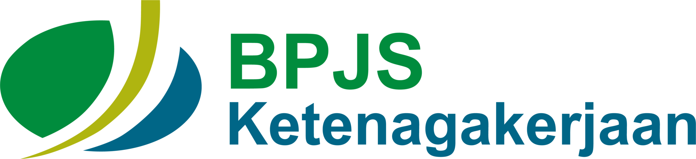